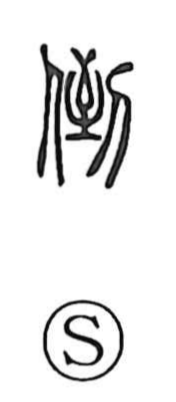

凍

Uncategorized
Kun: kooru, kogoeru | On: to
to freeze ・ be frozen
Explanation
A phono-semantic graph: the left side is the ice radical 冫, giving the sense of cold and ice, while the right side 東 supplies the sound to and originally depicted a stuffed sack (橐), tied at both top and bottom. Shirakawa sees that tightly packed, bound form as an image of congealing, the way things harden and draw together in freezing. Early lexicographers already glossed it with the idea of water turning to ice. From this basis the character came to write kooru “to freeze,” kogoeru “to be chilled through,” and by extension the sense of freezing onto something.